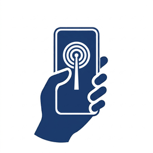

HelpKnock
Privacy policy
Be found without a network.
No server, no account
HelpKnock has no server and no account. The developer never receives anything you enter. Apart from the optional coffee described below, the app makes no network requests and uses no analytics or third-party services.
What stays on your phone
Your personal, medical and rescuer details, and the situation report you fill in while asking for help, are stored in this phone's keychain, on this device only. None of it is included in iCloud or computer backups. Personal details stay until you clear or change them in Settings; the situation report is erased when you leave the “I need help” role.
The list of nearby phones and what you load from them is kept in memory only and is gone when the app is closed. Messages are different: they stay on this phone as a record until you delete them.
Erasing all data in Settings removes all of the above at once, including what deleting the app leaves behind in the keychain.
What is sent over Bluetooth
In either role, your phone broadcasts a short beacon to every phone nearby running HelpKnock: a random node ID, your role, whether you have reported yourself safe, battery level, minutes since you last touched the phone, the headcount and hazards you set, and — while position sharing is on, which it is by default in a role and which you can switch off on the home screen — the phone's last known position with its accuracy and age.
While you are in the “I need help” role, a nearby phone in the rescuer role can connect and read the fields you turned on in “What others can see”, plus your situation, needs and passive signals such as battery trend and time since you last touched the phone. Only those fields are sent. Anyone nearby who chose the rescuer role can read them; the app cannot verify who they are.
In the rescuer role, the unit, callsign and capabilities you entered can be read by every phone nearby running HelpKnock, including people asking for help, so they can see who you say you are. Your marks and messages are shared with other rescuers in range.
Messages are shared too. What you write in the “I need help” role reaches every rescuer nearby, and rescuers pass it on to each other, so each of their phones keeps a copy. What rescuers write to you is passed on the same way.
Reports are shared too. A report, with the name of the person who made it, is passed on to rescuers nearby; a report about a rescuer also reaches people asking for help. Blocking someone only changes your own phone: their messages are hidden, and while you are in the “I need help” role they can no longer read your details.
Not encrypted yet
Bluetooth transfers are not encrypted in this version. Someone within radio range with the right equipment could read what is sent. Share only what you would say out loud to a stranger who came to help.
Node ID
The node ID is random and changes every time you leave a role, so phones cannot be tracked from one session to the next. It is not linked to your Apple Account, phone number or anything else.
Permissions
The app asks for three permissions. Bluetooth is used to broadcast and to find nearby phones, including while the app is in the background, so a trapped person can still be found with the screen off. Location is asked for when you take a role and is used only to put your last known position in the broadcast; the app does not track you in the background. Motion & Fitness is asked for in the “I need help” role and is used only to read how long the phone has been still; no sensor is switched on.
Buying the developer a coffee
The coffee in Settings is optional and goes through Apple's In-App Purchase: when you open Settings, the App Store is asked for its price, and if you buy it, Apple handles the payment. The developer is not told who you are, and HelpKnock keeps nothing about the purchase.
隱私政策
沒有網路，也能被找到。
沒有伺服器、沒有帳號
HelpKnock 沒有伺服器、沒有帳號。開發者收不到你輸入的任何內容。除了下面說的自願請喝咖啡，app 不連網、沒有分析工具、沒有第三方服務。
留在你手機上的
你的個人、醫療與救災者資料，以及求助時填的現況回報，都存在這支手機的鑰匙圈，只在這台裝置上，不會進 iCloud 或電腦備份。個人資料留到你在設定裡清掉或改掉為止；現況回報在你離開「我需要幫助」角色時清除。
附近手機的清單與你從他們那裡讀到的資料只放在記憶體，app 關掉就沒了。訊息不一樣：它會以紀錄的形式留在這支手機上，直到你自己刪除。
設定裡的「清除所有資料」會把上面這些一次清掉，包括刪除 app 也不會消失的鑰匙圈資料。
透過藍牙送出什麼
不論哪種角色，你的手機都會向附近每一支跑著 HelpKnock 的手機廣播一段短訊號：隨機的節點 ID、你的角色、是否已回報安全、電量、多久沒碰手機、你設定的人數與危害；分享位置開著的時候（進角色預設開，可在首頁關掉），還有手機最後一次定到的位置及其精度與時間。
在「我需要幫助」角色時，附近選了救災者角色的手機可以連上來讀你在「別人可以看到什麼」裡打開的欄位，加上你的現況、需求與被動訊號（例如耗電趨勢、距上次觸碰手機多久）。只送這些。附近任何選了救災者角色的人都讀得到；app 無法驗證對方是誰。
在救災者角色時，你填的單位、隊呼、能力，附近每一支開著 HelpKnock 的手機都讀得到，包括需要幫助的人，讓他們知道你自稱是誰。你的標記與訊息會分享給範圍內的其他救災者。
訊息也會分享出去。你在「我需要幫助」角色寫的訊息，附近每一位救災者都收得到，救災者之間還會互相轉交，所以他們每支手機上都會留一份。救災者寫給你的訊息也是這樣轉交的。
檢舉也會分享出去。一則檢舉連同檢舉者的名字，會轉給附近的救災人員；被檢舉的是救災人員時，需要幫助的人也看得到。封鎖只改變你自己這支手機：對方的訊息會藏起來；你在「我需要幫助」角色時，他也讀不到你的資料。
還沒有加密
這個版本的藍牙傳輸沒有加密。無線電範圍內有合適設備的人可能讀到送出的內容。只分享你願意當面告訴前來救援的陌生人的事。
節點 ID
節點 ID 是隨機的，每次離開角色就換新，手機無法被跨次追蹤。它跟你的 Apple 帳號、電話號碼或任何其他東西都沒有關聯。
權限
app 要三個權限。藍牙用來廣播與尋找附近的手機，包括 app 在背景時，受困的人螢幕關著也找得到。定位在你進入角色時詢問，只用來把最後一次定到的位置放進廣播；app 不會在背景追蹤你。「動作與健身」在「我需要幫助」角色裡詢問，只用來讀手機多久沒動；不會開任何感測器。
請作者喝杯咖啡
設定裡的咖啡是自願的，透過 Apple 的 App 內購買進行：打開設定時會向 App Store 查詢價格，購買時由 Apple 處理付款。開發者不會知道你是誰，HelpKnock 也不保留任何購買紀錄。